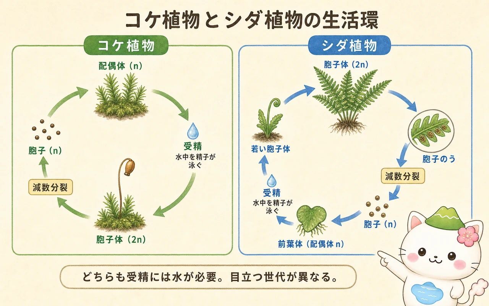
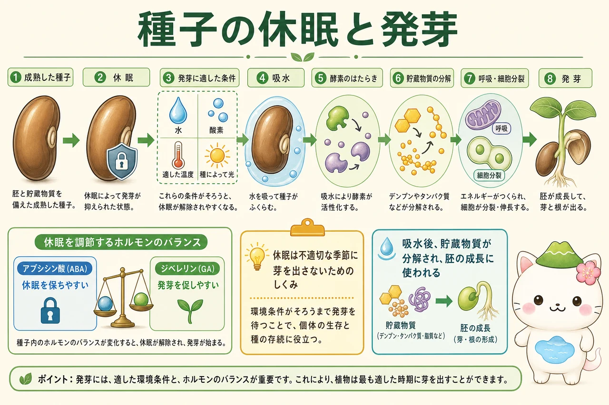

生活環を読む基本
世代交代では、胞子体（2n）が減数分裂して胞子（n）をつくり、胞子が体細胞分裂を重ねて配偶体（n）になります。配偶体は体細胞分裂によって配偶子（n）をつくり、卵と精子の受精で接合子（2n）ができます。接合子は体細胞分裂を重ね、再び胞子体へ育ちます。染色体数が変わるのは、減数分裂（2n→n）と受精（n+n→2n）の二か所です。
ここで、胞子と配偶子を混同しないことが大切です。胞子は単独で発芽して配偶体へ成長する細胞で、配偶子はほかの配偶子と融合して接合子になる細胞です。また、配偶体・胞子体は細胞一個の名前ではなく、それぞれの世代の多細胞の体を指します。
コケ植物とシダ植物
コケ植物では、目に付きやすい緑の体が配偶体です。その上に伸びる柄と蒴は、受精後に配偶体上で育つ胞子体です。胞子体は配偶体に栄養を依存する傾向があります。精子が卵へ届くには水が必要であり、雨や水滴のある環境が受精を助けます。
シダ植物では、ふだん見かける大きな葉のある体が胞子体です。葉の裏の胞子のうで減数分裂が起こり、胞子ができます。胞子が発芽すると、小さな前葉体という配偶体になり、そこで卵と精子がつくられます。シダも受精には水を必要としますが、目立つ世代がコケ植物と逆である点が重要です。

種子植物と異形胞子性
種子植物は、雄の配偶体につながる小胞子と、雌の配偶体につながる大胞子を区別してつくる異形胞子性をもちます。小胞子は花粉へ、大胞子は胚珠の中で雌性配偶体をつくる方向へ進みます。花粉は風や動物で運ばれ、柱頭または胚珠付近で発芽して花粉管を伸ばし、精細胞を卵まで届けます。このため、受精を自由水に大きく頼らずに行えます。
裸子植物では胚珠が子房に包まれておらず、受精後に種子ができます。被子植物では胚珠が子房に包まれ、受精後に胚珠は種子、子房は果実へ発達します。被子植物では二つの精細胞のうち一つが卵と受精して胚になり、もう一つが中央細胞と融合して胚乳の形成につながる重複受精が起こります。種子は胚・養分・種皮を含み、次の世代を保護し散布する単位です。


「花粉＝精子」ではないよ。花粉は雄性配偶体で、その中から生じる精細胞を花粉管が運ぶんだ。細胞の段階と、世代としての体を分けて覚えると整理しやすいよ。
休眠と発芽
成熟した種子は、すぐに発芽するとは限りません。休眠は、寒さや乾燥など不適切な季節に芽を出すことを避け、発芽に適した時期を待つ仕組みです。休眠の深さは種によって異なり、低温を経験すること、種皮が傷むこと、光を受けることなどが解除の条件になる場合があります。
発芽には、水・酸素・適した温度が基本的に必要で、種によっては光も条件になります。吸水によって代謝が再開すると、酵素がデンプンやタンパク質、脂質などの貯蔵物質を分解し、呼吸と細胞分裂に必要な材料とエネルギーを用意します。一般にアブシシン酸は休眠を保ちやすくし、ジベレリンは発芽を促しやすくしますが、実際の発芽は環境と複数のホルモンのバランスで調節されます。

この冊子の要点
- 減数分裂と受精が、生活環のnと2nを切り替える二つの地点です。
- コケ植物では配偶体、シダ植物では胞子体が目立ち、どちらも受精には水が必要です。
- 種子植物は花粉と胚珠をもち、花粉管で精細胞を運ぶため、受精を自由水に大きく頼りません。
- 休眠と発芽は、環境条件とホルモンのバランスによって調節されます。